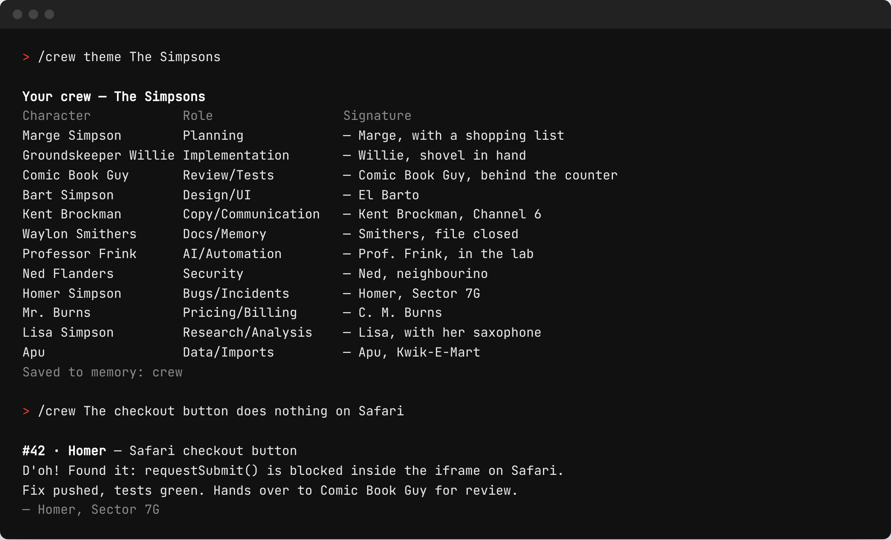

/crew — dein KI-Team
mit Charakter.
Jede Aufgabe bekommt eine Nummer und eine Figur. Du wählst ein Thema, zum Beispiel die Simpsons, 80er-Serien oder Fussball-Legenden. Claude stellt 12 Figuren mit Rolle und festem Charakter zusammen, und ab dann erledigt jede Aufgabe „jemand“: Homer nimmt die Bugs, Mr. Burns die Preise, Lisa die Recherche.

Was es bringt
- Jede Aufgabe hat eine Nummer.Gibt es im Repo ein Ticket-Board, folgt /crew dessen Regeln. Sonst zählt es selbst.
- Du siehst, wer woran arbeitet.Übergaben sind ausdrücklich: „Homer übergibt an Comic Book Guy.“
- Die Crew bleibt.Sie wird gespeichert, damit jede Figur morgen gleich klingt.
- Der Stil färbt nur den Ton, nie den Inhalt.Ergebnis zuerst, Fakten vollständig, höchstens ein, zwei Sätze in der Rolle.
- Kein Rollenspiel, wo es nicht hingehört.Commits, PRs, Code und Kundentexte tragen nur die Nummer.
- Deine Regeln bleiben.Review, Freigabe und Deploy laufen wie bisher.
Installation
Als Claude-Code-Plugin (empfohlen):
/plugin marketplace add tradexag/crew
/plugin install crew@tradexagOder als einfacher Skill, in einer Zeile:
mkdir -p ~/.claude/skills/crew && curl -fsSL https://raw.githubusercontent.com/tradexag/crew/main/skills/crew/SKILL.md -o ~/.claude/skills/crew/SKILL.mdNur für ein Projekt: .claude/skills/crew/ im Repo statt ~/.claude/skills/crew/. Auf claude.ai: skills/crew/SKILL.md in einem Ordner crew/ zippen und unter Einstellungen → Fähigkeiten → Skills hochladen.
Befehle
| Befehl | Was passiert |
|---|---|
/crew theme The Simpsons | Claude besetzt 12 Figuren, zeigt die Tabelle und speichert sie |
/crew <Aufgabe> | vergibt die nächste Nummer und die passende Figur, startet die Arbeit |
/crew <Name> <Aufgabe> | gibt die Aufgabe dieser Figur |
/crew <Name> | diese Figur berichtet über ihre offenen Tickets |
/crew | Aufstellung: wer woran arbeitet |
/crew swap Homer Moe | ersetzt eine Figur, die Rolle bleibt |
Es gibt kein Standard-Thema: Beim ersten /crew fragt Claude nach einem. Claude antwortet in deiner Sprache.
Die 12 Rollen
- Planung
- Umsetzung
- Review/Tests
- Design/UI
- Texte/Kommunikation
- Doku/Gedächtnis
- KI/Automatisierung
- Sicherheit
- Bugs/Störungen
- Preise/Abrechnung
- Recherche/Analyse
- Daten/Importe
Zeig uns deine Crew: Eröffne ein Issue auf GitHub oder markiere TradeX AG auf LinkedIn.
/crew — give your AI
coding agent a team.
Every task gets a ticket number and a crew member. You pick a theme (The Simpsons, 80s TV shows, Pokémon, football legends, anything). Claude casts 12 characters, gives each one a role and a lasting personality, and from then on every task is handled by “someone”: Homer takes the bugs, Mr. Burns the pricing, Lisa the research.
Why it helps
- Every task has a number.If the repo has a ticket board, /crew follows its rules. Otherwise it counts in its memory file.
- You see who is on which ticket.Handovers are explicit: “Homer hands over to Comic Book Guy.”
- The crew is remembered.So every character sounds the same tomorrow.
- Style colours the tone, never the content.Result first, facts complete, one or two in-character sentences at most.
- No role-play where it doesn’t belong.Commits, PRs, code and customer texts only carry the number.
- It changes no rules.Your review, approval and deploy rules apply as before.
Install
Claude Code plugin (recommended):
/plugin marketplace add tradexag/crew
/plugin install crew@tradexagOr as a plain skill, one line:
mkdir -p ~/.claude/skills/crew && curl -fsSL https://raw.githubusercontent.com/tradexag/crew/main/skills/crew/SKILL.md -o ~/.claude/skills/crew/SKILL.mdFor a single project use .claude/skills/crew/ inside the repo instead of ~/.claude/skills/crew/. On claude.ai, upload skills/crew/SKILL.md (zipped in a crew/ folder) under Settings → Capabilities → Skills.
Use
| Command | What happens |
|---|---|
/crew theme The Simpsons | Claude casts 12 characters, shows the table, saves it |
/crew <task> | assigns the next ticket number and the right character, starts work |
/crew <name> <task> | gives the task to that character |
/crew <name> | that character reports on its open tickets |
/crew | line-up: who works on what |
/crew swap Homer Moe | replaces one character, the role stays |
There is no default theme: the first /crew asks you for one.
The 12 roles
- Planning
- Implementation
- Review/Tests
- Design/UI
- Copy/Communication
- Docs/Memory
- AI/Automation
- Security
- Bugs/Incidents
- Pricing/Billing
- Research/Analysis
- Data/Imports
Show us your crew: open an issue on GitHub or tag TradeX AG on LinkedIn.